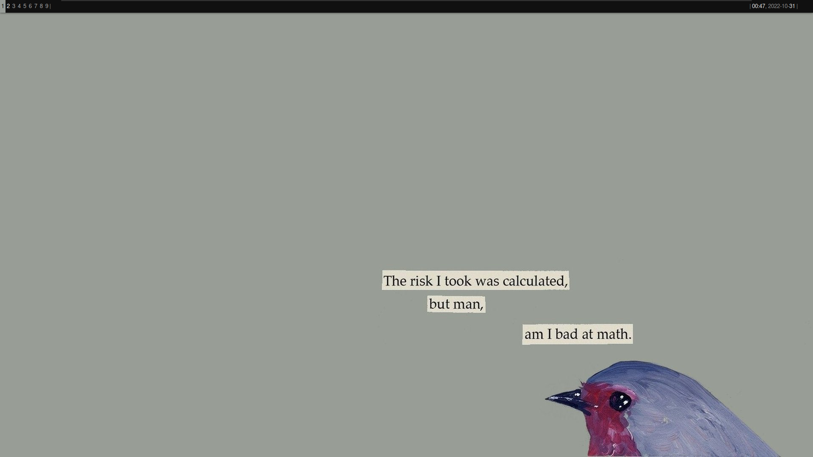
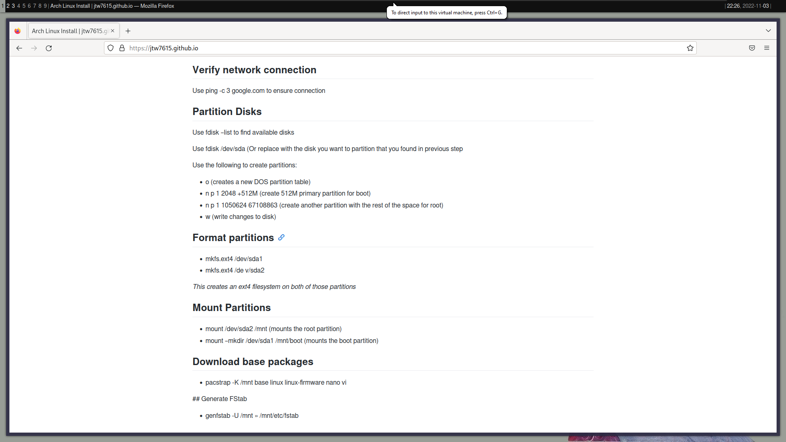

Arch Linux Install
Initial Notes
I have a Arch setup dualbooted on my main Laptop, so I didn't really have any install questions. I chose a different window manager and bar than my main machine so I could play around with the configuration.
Verify network connection
Use ping -c 3 google.com to ensure connection
Partition Disks
Use fdisk --list to find available disks
Use fdisk /dev/sda (Or replace with the disk you want to partition that you found in previous step
Use the following to create partitions:
- o (creates a new DOS partition table)
- n p 1 2048 +512M (create 512M primary partition for boot)
- n p 1 1050624 67108863 (create another partition with the rest of the space for root)
- w (write changes to disk)
Format partitions
- mkfs.ext4 /dev/sda1
mkfs.ext4 /de v/sda2
This creates an ext4 filesystem on both of those partitions
Mount Partitions
- mount /dev/sda2 /mnt (mounts the root partition)
- mount --mkdir /dev/sda1 /mnt/boot (mounts the boot partition)
Download base packages
pacstrap -K /mnt base linux linux-firmware nano vi
Generate FStab
- genfstab -U /mnt >> /mnt/etc/fstab
Enter installed arch environment
- arch-chroot /mnt
Set time
- ln -sf /usr/share/zoneinfo/America/Chicago /etc/localtime
- hwclock --systohc
Set local language
- nano /etc/locale.gen and uncomment en_US.UTF-8 UTF-8
Set network details up
- echo jakearch > /etc/hostname
Reset root password
- passwd
Install bootloader
- pacman -S grub
- grub-install /dev/sda
- grub-mkconfig -o /boot/grub/grub.cfg
Install sudo and networking tools
I forgot this the first time and had to boot back into my live disk to install
- pacman -S sudo dhcp dhcpcd
- systemctl enable dhcpcd
Create users
- useradd jake -m -g wheel
- passwd jake
- useradd codi -m -g wheel
- passwd codi
- chage -d 0 codi
Configure Sudo
- visudo Find line and uncomment wheel with password
Install Window Manager
- pacman -S xorg herbstluftwm lightdm-gtk-greeter
Install preferred software
- pacman -S urxvt firefox rofi feh picom neofetch
Reboot and login to user instead of root
Change user shell
- sudo pacman -S fish
- chsh -s /bin/fish
Install ssh
- pacman -S openssh
Use ssh
- ssh sysadmin@10.10.1.135
 